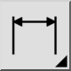
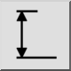

Dit is een automatische vertaling.
Werkbalk / icoon:


Menu: Bemating > Vertikaal
Sneltoets: D, V
Opdrachten: dimver | dimvertical | dv
Dit werktuig wordt geleverd voor het gemak en gedraagt zich in wezen als het werktuig voor gedraaide maten. Het enige verschil is dat de hoek is vastgezet op 90 graden (verticaal)